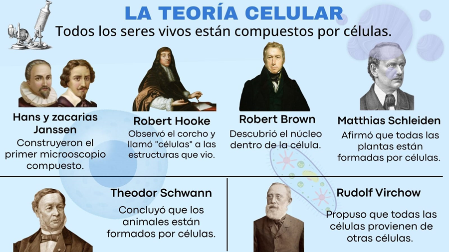

La teoría celular
.
En esta clase, conoceremos la Teoría Celular, uno de los conceptos más importantes de la biología. Descubriremos cómo los científicos llegaron a entender que todas las plantas, animales y seres vivos están formados por células, y por qué este descubrimiento cambió nuestra forma de ver la vida.
.
Los científicos que lo descubrieron:
Hans y Zacharias Janssen: Construyeron el primer microscopio compuesto.
Robert Hooke: Observó el corcho y llamó "células" a las estructuras que vio.
Robert Brown: Descubrió el núcleo dentro de la célula.
Matthias Schleiden: Afirmó que todas las plantas están formadas por células.
Theodor Schwann: Concluyó que los animales están formados por células.
Rudolf Virchow: Propuso que todas las células provienen de otras células.
.
